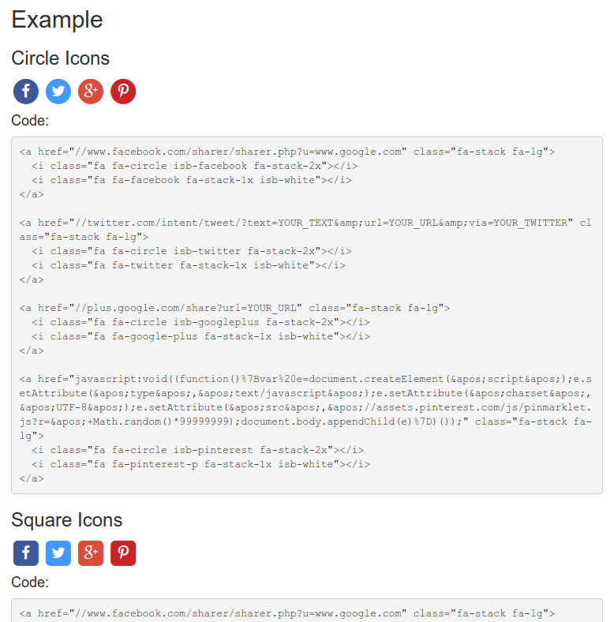

As of 2015, we have made strides to build a healthy Open Source ecosystem using GitHub in order to share plugins, libraries and even knowledge through the use of GitHub platform. There are many reasons why commercial developers should embrace open source software, including increasing software security, better code quality, lower running costs and MUCH more.
This mini site is powered by GitHub Pages and it's aim to provide a dashboard for showing an overview of the activity on our organisation repositories as well as show casing our recent featured projects with an in-depth description for each project featured.

A WordPress plugin that allows a user to deactivate their own user account from within the WordPress login area, or via the shortcode.
To create a front-end page that immediately deactivates the currently logged in user's account, use the following short code. This can be useful when developing a custom front-end.
[jhdup_deactivate_current_user_shortcode]

A pure HTML & CSS implementation on allowing your end users to interact with social networks from your site without any need of loading in heavy JavaScript-based widgets. It provides a choice of multiple styles to aim to suite your website.
This project currently supports the following social networks:
A shell script that is designed to identify any backup files present in a git repository, remove them from the repository (via git rm) and optionally commit and push the changes. It works by identifying backup files based on their file names ending with an underscore _ following by a string that represents a date.
The backup script currently checks over the following files: